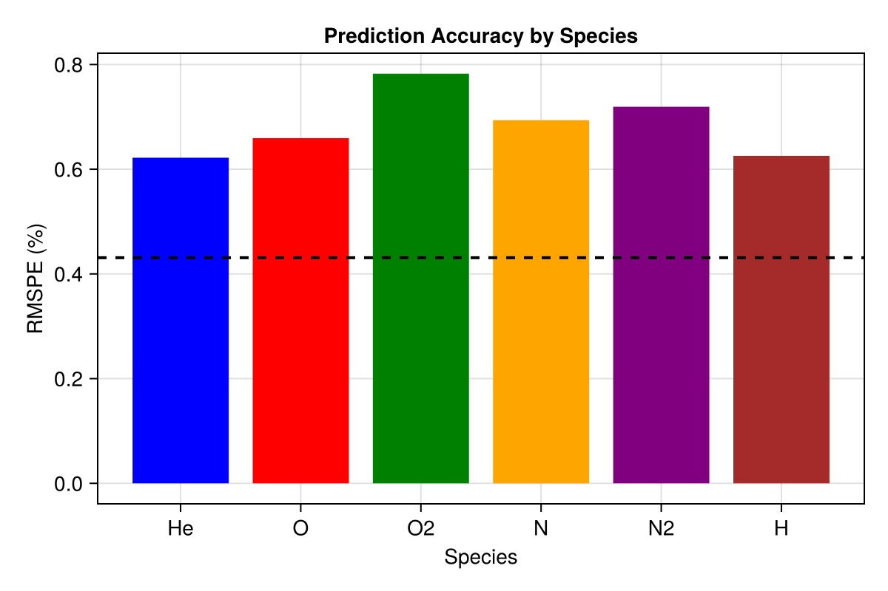
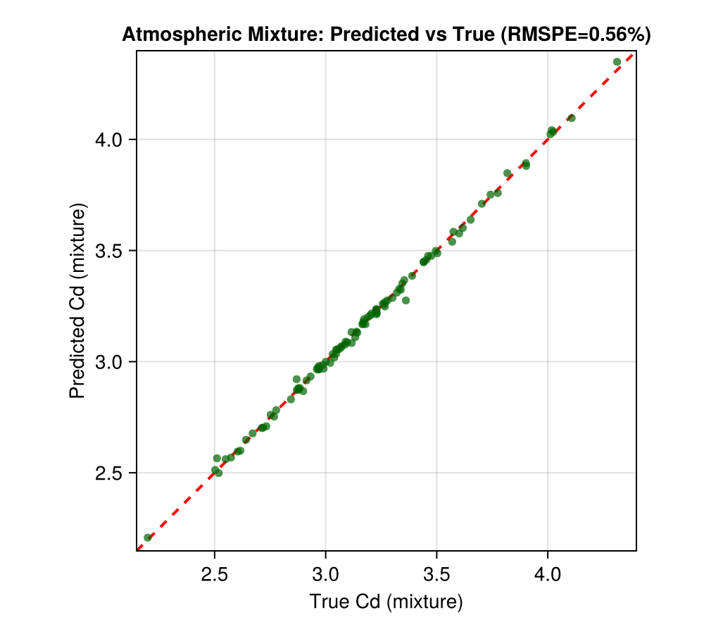
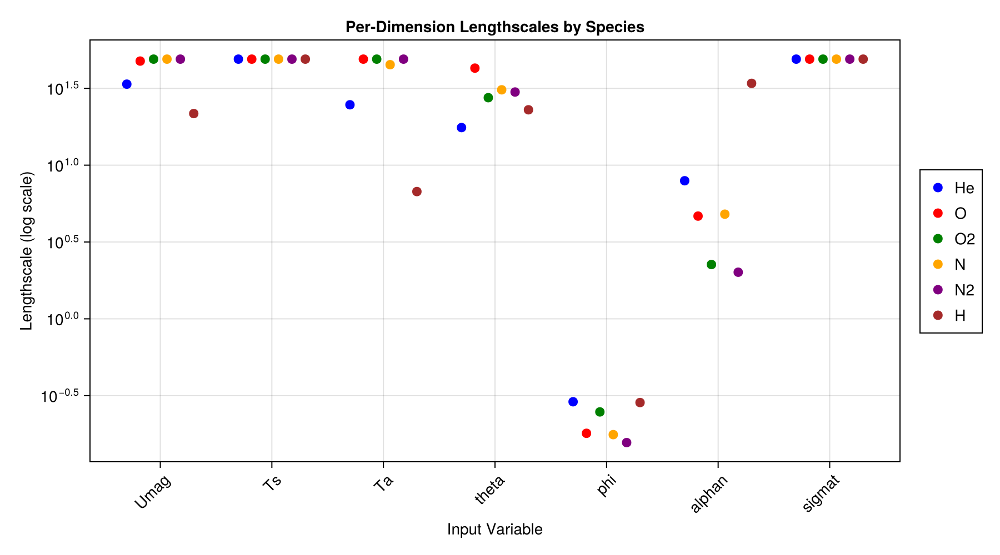
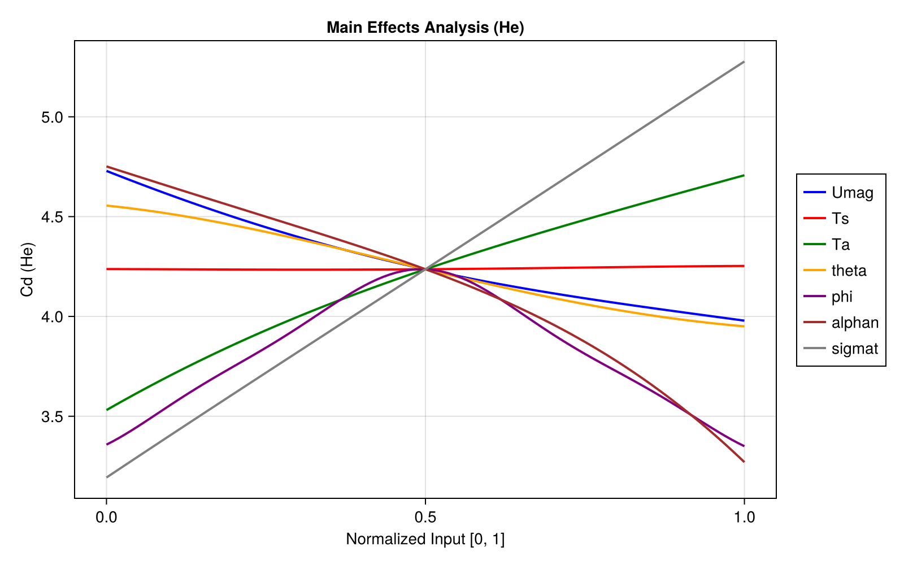

Satellite Drag Modeling Example
This example demonstrates GP surrogate modeling for GRACE satellite drag coefficients, based on Chapter 2 of "Surrogates" by Robert Gramacy.
Overview
We will:
- Load GRACE satellite drag coefficient data
- Fit separable GPs for multiple atmospheric species
- Make predictions and compute RMSPE
- Combine species predictions for atmospheric mixture
Background
The GRACE satellite mission requires accurate drag coefficient (Cd) predictions for orbit determination. The drag coefficient depends on:
- Velocity magnitude (Umag)
- Surface temperature (Ts)
- Atmospheric temperature (Ta)
- Yaw and pitch angles (theta, phi)
- Accommodation coefficients (alphan, sigmat)
Data is available for 6 atmospheric species: He, O, O2, N, N2, H.
Setup
using laGP
using Downloads
using DelimitedFiles
using Random
using Statistics: mean
Random.seed!(42)
# Variable names
var_names = ["Umag", "Ts", "Ta", "theta", "phi", "alphan", "sigmat"]
# Atmospheric species
species_list = [:He, :O, :O2, :N, :N2, :H]
# Molecular masses (g/mol)
molecular_mass = Dict(
:He => 4.003, :O => 15.999, :O2 => 31.998,
:N => 14.007, :N2 => 28.014, :H => 1.008
)Load Data
Download data from the TPM repository:
function load_grace_data(species::Symbol, n::Int)
url = "https://bitbucket.org/gramacylab/tpm/raw/master/data/GRACE/CD_GRACE_$(n)_$(species).csv"
io = IOBuffer()
Downloads.download(url, io)
seekstart(io)
content = String(take!(io))
lines = split(content, '\n')
data_rows = Float64[]
for line in lines[2:end]
if !isempty(strip(line))
values = parse.(Float64, split(line, ','))
append!(data_rows, values)
end
end
n_cols = length(split(lines[1], ','))
return reshape(data_rows, n_cols, :)'
end
# Load training (n=1000) and test (n=100) data
train_data = Dict(s => load_grace_data(s, 1000) for s in species_list)
test_data = Dict(s => load_grace_data(s, 100) for s in species_list)
println("Loaded data for $(length(species_list)) species")
println("Training: 1000 points, Test: 100 points")Normalize Data
function normalize_data(train, test)
X_train_raw = train[:, 1:7]
X_test_raw = test[:, 1:7]
Y_train = train[:, 8]
Y_test = test[:, 8]
# Global normalization
ranges = [(minimum(vcat(X_train_raw[:,j], X_test_raw[:,j])),
maximum(vcat(X_train_raw[:,j], X_test_raw[:,j]))) for j in 1:7]
X_train = similar(X_train_raw)
X_test = similar(X_test_raw)
for j in 1:7
X_train[:, j] = (X_train_raw[:, j] .- ranges[j][1]) ./ (ranges[j][2] - ranges[j][1])
X_test[:, j] = (X_test_raw[:, j] .- ranges[j][1]) ./ (ranges[j][2] - ranges[j][1])
end
return X_train, X_test, Y_train, Y_test
end
normalized = Dict(s => normalize_data(train_data[s], test_data[s]) for s in species_list)Fit Separable GPs
gp_models = Dict{Symbol, GPsep{Float64}}()
predictions = Dict{Symbol, NamedTuple}()
rmspe_values = Dict{Symbol, Float64}()
for species in species_list
X_train, X_test, Y_train, Y_test = normalized[species]
# Get hyperparameter ranges
d_range = darg_sep(X_train)
g_range = garg(Y_train)
d_start = [r.start for r in d_range.ranges]
d_ranges = [(r.min, r.max) for r in d_range.ranges]
# Fit GP
gp = new_gp_sep(X_train, Y_train, d_start, g_range.start)
jmle_gp_sep(gp; drange=d_ranges, grange=(g_range.min, g_range.max))
# Predict
pred = pred_gp_sep(gp, X_test; lite=true)
# RMSPE
pct_errors = ((pred.mean .- Y_test) ./ Y_test) .* 100
rmspe = sqrt(mean(pct_errors.^2))
gp_models[species] = gp
predictions[species] = (mean=pred.mean, Y_test=Y_test)
rmspe_values[species] = rmspe
println("$species RMSPE: $(round(rmspe, digits=3))%")
endRMSPE comparison across species:

Parity plot for Helium predictions:

Atmospheric Mixture
Combine species predictions using mole fraction weighting:
# Example mole fractions at ~400 km altitude
mole_fractions = Dict(
:O => 0.70, :N2 => 0.15, :He => 0.08,
:O2 => 0.04, :N => 0.02, :H => 0.01
)
# Mass-weighted mixture
numerator = zeros(100)
denominator = zeros(100)
true_numerator = zeros(100)
for species in species_list
weight = mole_fractions[species] * molecular_mass[species]
numerator .+= predictions[species].mean .* weight
true_numerator .+= predictions[species].Y_test .* weight
denominator .+= weight
end
Cd_mix_pred = numerator ./ denominator
Cd_mix_true = true_numerator ./ denominator
# Mixture RMSPE
pct_errors_mix = ((Cd_mix_pred .- Cd_mix_true) ./ Cd_mix_true) .* 100
rmspe_mixture = sqrt(mean(pct_errors_mix.^2))
println("Mixture RMSPE: $(round(rmspe_mixture, digits=3))%")Parity plot for the atmospheric mixture predictions:

Lengthscale Analysis
println("\nLengthscales by variable (smaller = more important):")
println(rpad("Species", 8), join([rpad(v, 10) for v in var_names]))
for species in species_list
d = gp_models[species].d
vals = join([rpad(round(d[j], sigdigits=3), 10) for j in 1:7])
println(rpad(string(species), 8), vals)
end
# Average importance
avg_d = zeros(7)
for species in species_list
avg_d .+= gp_models[species].d
end
avg_d ./= length(species_list)
sorted_idx = sortperm(avg_d)
println("\nMost influential inputs:")
for i in 1:3
j = sorted_idx[i]
println(" $(var_names[j]): avg lengthscale = $(round(avg_d[j], sigdigits=3))")
endLengthscales by species reveal which inputs matter most:

Main Effects (for Helium)
gp_he = gp_models[:He]
baseline = fill(0.5, 7)
n_me = 100
x_me = range(0.0, 1.0, length=n_me)
main_effects_he = Matrix{Float64}(undef, n_me, 7)
for j in 1:7
XX = repeat(baseline', n_me, 1)
XX[:, j] = collect(x_me)
pred = pred_gp_sep(gp_he, XX; lite=true)
main_effects_he[:, j] = pred.mean
end
println("\nHe sensitivity (effect range):")
for j in 1:7
range_j = maximum(main_effects_he[:, j]) - minimum(main_effects_he[:, j])
println(" $(var_names[j]): $(round(range_j, digits=4))")
endMain effects for Helium show variable sensitivities:

Visualization (with CairoMakie)
using CairoMakie
# Parity plot for Helium
fig = Figure(size=(500, 450))
ax = Axis(fig[1, 1],
xlabel="True Cd",
ylabel="Predicted Cd",
title="He: Predicted vs True (RMSPE=$(round(rmspe_values[:He], digits=2))%)",
aspect=DataAspect()
)
Y_test = predictions[:He].Y_test
pred_he = predictions[:He].mean
lims = (minimum(vcat(Y_test, pred_he)) - 0.1, maximum(vcat(Y_test, pred_he)) + 0.1)
lines!(ax, [lims[1], lims[2]], [lims[1], lims[2]], color=:red, linewidth=2, linestyle=:dash)
scatter!(ax, Y_test, pred_he, color=:blue, markersize=8, alpha=0.7)
xlims!(ax, lims...)
ylims!(ax, lims...)
figKey Findings
- Species variation: Different species have different drag characteristics
- Input importance: Velocity magnitude and accommodation coefficients are most influential
- Mixture benefit: Mixture RMSPE is often lower due to averaging effects
- Separable advantage: Per-dimension lengthscales reveal input sensitivities
- Scalability: GPs trained on 1000 points predict accurately on held-out data